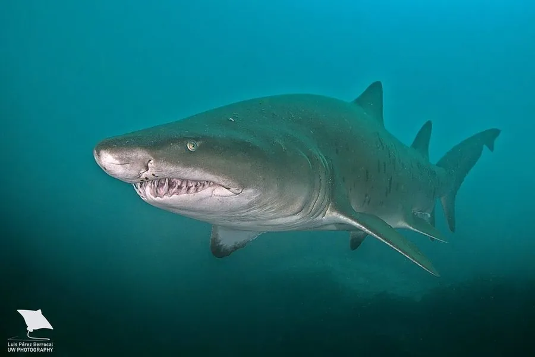

鱼类 · 动物界
沙虎鲨 Carcharias taurus

牙齿细长如锥、体色灰褐带锈斑的沿海鲨鱼，会吞入空气悬浮在水中，子宫内胚胎互相捕食，因繁殖极慢而被列为极危。
- 分类
- 门脊索动物门纲软骨鱼纲目鼠鲨目科锥齿鲨科属锥齿鲨属
- 栖息环境
- 温暖海域的沿岸沙底、岩礁、洞穴与沉船区，常近海底活动
- 地理分布
- 全球温暖海域沿岸，包括西大西洋、地中海、印度洋与西太平洋
- 保护级别
- IUCN 极危（CR）；CITES 附录Ⅱ
物种志
沙虎鲨体长 2.0–3.2 米，体重 90–160 千克，雌性略大。体呈纺锤形，背侧灰褐至黄褐，腹面白色，体侧与尾部常散布不规则的锈红色斑点，幼体斑点多、成体渐淡。最显眼的是牙齿：细长、尖锐而光滑，像一排排锥子，露出嘴外，适合刺穿而非锯切。它没有喷水孔，靠吞入水面空气使胃部充气，从而不费力地悬浮在水层中。
它们分布于全球温暖海域的沿岸、沙底、礁区与沉船附近，常成群在洞穴或岩礁旁缓游，夜间捕食鱼类、鱿鱼、蟹与小型鳐类。繁殖方式极为特殊：胚胎在子宫内先以卵黄为食，随后会吞食同胎的其他胚胎，最终每侧子宫通常只剩一尾幼鲨，妊娠期长达 9–12 个月，每两年才繁殖一次。这种极低的繁殖率使其难以承受捕捞压力，加之近岸渔网误捕，全球种群大幅下降，被列为极危物种。
形态与习性
- 体长约 2.0–3.2 m，雌性略大
- 体重约 90–160 kg
- 食性鱼类、鱿鱼、蟹与小型鳐类
- 繁殖子宫内胚胎互相捕食，通常每胎仅 2 尾，妊娠 9–12 个月
- 悬浮方式吞入水面空气使胃部充气，不游动也能悬浮
- 牙齿细长如锥，尖锐光滑，露出嘴外
- 寿命约 25–30 年
趣味知识
- 沙虎鲨会游到水面吞一口空气，靠充气的胃悬浮在水中省力。
- 它的胚胎在子宫里就会互相吞食，最后每侧子宫通常只剩一尾。
- 细长外露的锥形牙让它看起来总像在咧嘴冷笑。